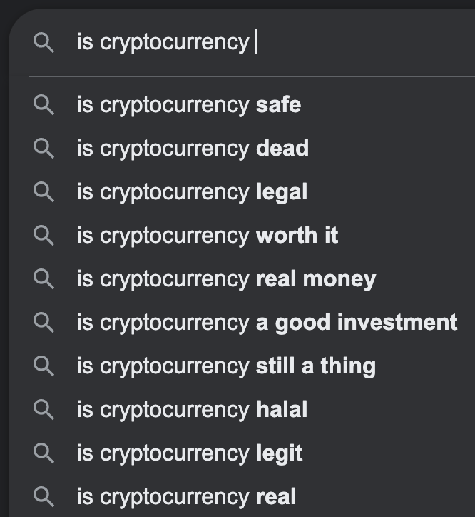
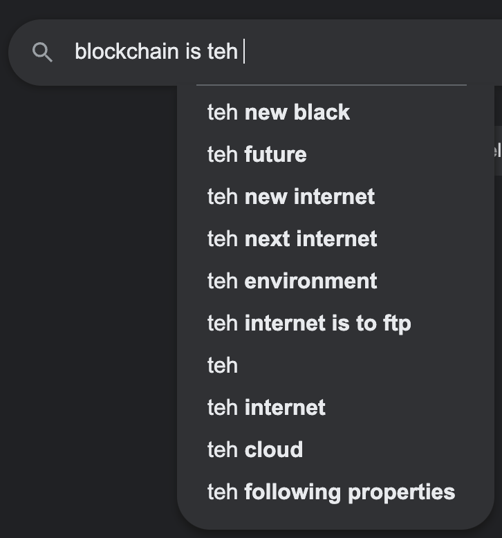

class: small # The Maybe-Why and Sorta-How of Programmable Money *How to use the slides*: * <kbd>P</kbd> toggle presenter notes * <kbd>?</kbd> help menu * <kbd>→</kbd> next slide Also, [here's the source](https://github.com/chadoh/maybe-why-and-sorta-how-of-programmable-money) --- class: small *you* -- Show of hands! Who here thinks blockchain is: -- - the devil?  --- class: small *you* Show of hands! Who here thinks blockchain is: - the devil? - the savior?  --- class: small *you* Show of hands! Who here thinks blockchain is: - the devil? - the savior? - somewhere in between? --- class: small *you* Show of hands! Software in 2024 be like: -- pick yr dystopia, lol! -- - robot overlords -- - commodify all human behavior -- - foment civil war -- - entrench new oligarchs ??? At the small scale, there's lots of fine and valuable things happening. But when I started in tech 15 years ago, I feel like there was lots of utopian narratives circulating about tech's role in humanity's future. But now, well, --- class: small *me* ??? I'm -- - embittered --- class: small *me* - chadoh -- - 2010 ??? Professional software engineer since 2010. Ruby on Rails. React starting in 2015. Messy "web3" startup in 2019. Near Inc 2020. Fired in 2021. Co-founded Aha Labs with fellow Near reject. -- - Aha Labs -- - cynically: "exploiting the market niche created by bloated blockchain treasuries fulfilling their legal obligation to keep spending on their tech" --- class: small *me* - chadoh - 2010 - Aha Labs - naïvely: "building the foundations for the next, ??? GitHub Copilot suggested everything that comes next. It saw I was writing about Blockchain and was like "hang on, I got this" 😂 -- more equitable, -- more open, -- more programmable, -- more global, -- more decentralized, -- more secure, -- more private, -- more transparent, -- more fair, -- more efficient, -- more accessible, -- more inclusive, -- more interoperable version of the internet" --- class: small *me* - chadoh - 2010 - Aha Labs - normally: "building developer tooling for blockchains. and, maybe someday, for the decentralized web more broadly"  --- class: small *me* - chadoh - 2010 - Aha Labs - not an expert -- - *except* on the stuff I built -- - so *interrupt*! -- call me on my bullshit! --- *outline* -- 1. misguided arguments for blockchain -- 2. compelling? arguments -- 3. introduce Stellar -- 4. introduce smart contracts -- 5. build a smart contract --- *misguided arguments for blockchain* -- - it will create world peace! -- - it will end poverty! -- - it will end corruption! --- *compelling? arguments* -- - prev 30 years: information next 30 years: money -- *→* not an optimistic take -- - "Wordpress for Money" --- *stellar* -- - 2014 -- - proof-of-stake -- - not v decentralized -- - no smart contracts ??? Have been building popular features from other smart contract platforms into their core protocol, such as Fungible Tokens, NFTs, and AMMs. -- - focused on global remittances -- - [MoneyGram](https://www.moneygram.com/mgo/us/en/) -- - [Beans](https://www.beansapp.com/features) ??? If "programmable money" is the argument that makes sense of blockchain, then it helps to have real money in the system. Stellar does! --- *smart contracts* ??? stop resigning to play catch-up with other blockchains -- - Soroban -- - Rust + WebAssembly -- - XDR --- *build a smart contract* --- *in conclusion* -- 1. misguided arguments for blockchain 2. compelling? arguments 3. introduce Stellar 4. introduce smart contracts 5. build a smart contract -- Programming money: -- it's not just for the devil anymore! ??? Copilot wrote that conclusion and you know, I'ma leave it